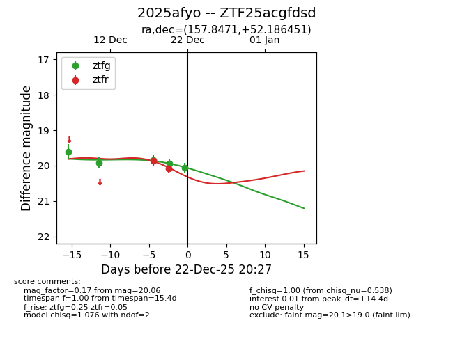
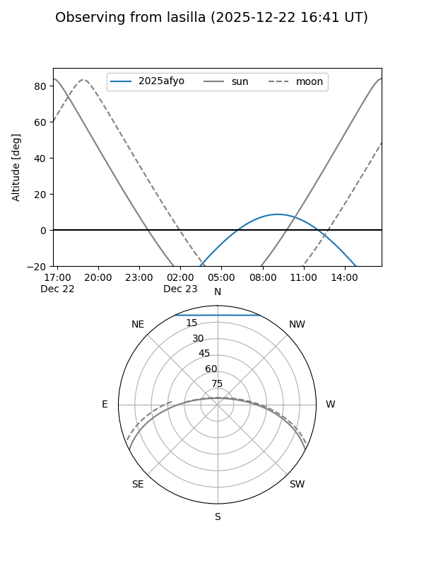
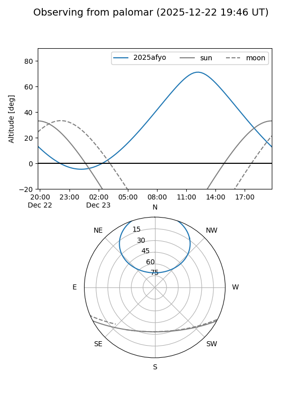
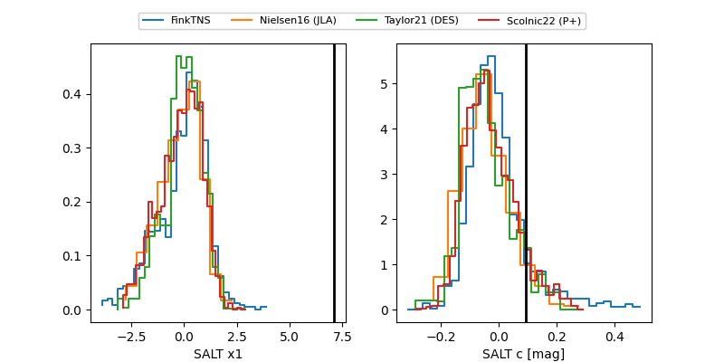

2025afyo
Target 2025afyo at 2025-12-18 13:12
Aliases and brokers:
FINK: fink-portal.org/ZTF25acgfdsd
Lasair: lasair-ztf.lsst.ac.uk/objects/ZTF25acgfdsd
ALeRCE: alerce.online/object/ZTF25acgfdsd
TNS: wis-tns.org/object/2025afyo
YSE: ziggy.ucolick.org/yse/transient_detail/2025afyo
alt names
ZTF25acgfdsd (ztf,fink_ztf)
2025afyo (tns,yse)
Coordinates:
equatorial (ra, dec) = 157.8471,+52.18645
equatorial (HMS+DMS) = 10:31:23.31,+52:11:11.22
galactic (l, b) = (159.5042,+53.81661)
Photometry
last ztfg=19.92, ztfr=19.86
2 ztfg, 1 ztfr detections
Lightcurve

Visibility


Additional plots
